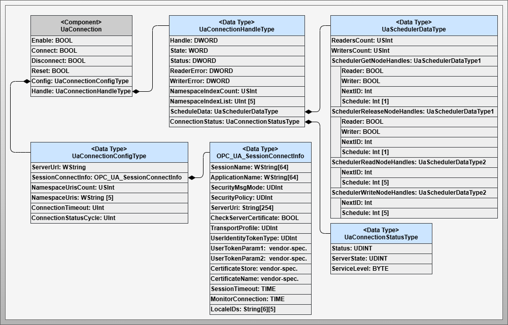
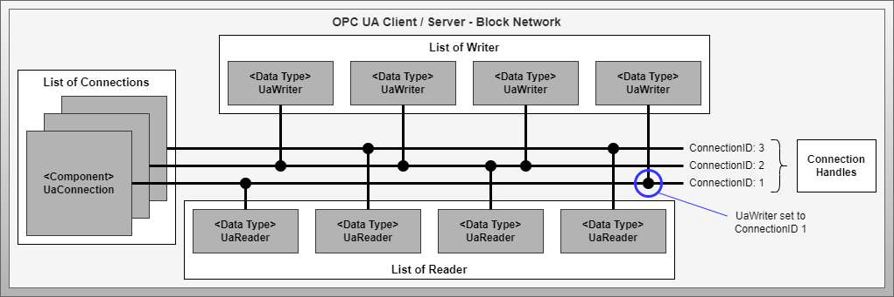
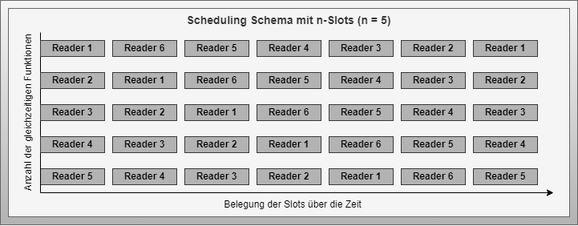
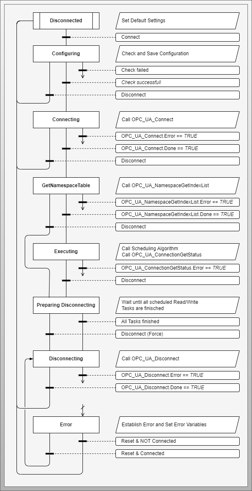
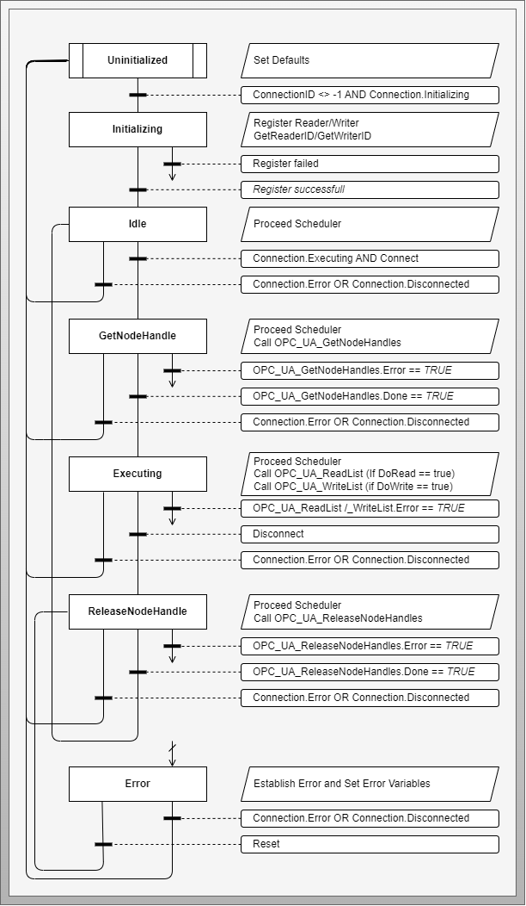

Configurable Communication OPC UA CS
Artifact - Configurable Communication with OPC UA CS
Artifact Factsheet
| Fact Sheet | |
|---|---|
| Name | Configurable Communication with OPC UA Client/Server (CS) |
| Artifact Type | Design Pattern |
| Target Users | Software Architects, PLC Programmers |
| Objective | This design pattern defines the concrete implementation for dynamically configurable OPC UA Client/Server communication. It describes information models, implementation patterns, limitations and possibilities. |
Relevant Publications
This section introduces the design pattern for configurable communication based on OPC UA Client/Server mechanisms. Parts of the content in this section have been published in [StMa19], [SFB+21], and [SKB+22*].
Artifact Description
The Configurable Communication with OPC UA CS design pattern describes an implementation of dynamically configurable OPC UA Client/Server connections including read and write functions. The pattern considers applicability on resource-constrained embedded control solutions. Corresponding mechanisms are provided to enable more efficient resource usage of the device and safe operation of communication.
The foundation of the patterns described here is the PLC Open OPC UA Client function block library. The configuration interface is provided through exposure of the configuration model in the integrated OPC UA Server of the controller.
The pattern offers three possibilities related to automation service choreographies - (1) Read information from other active choreography participants and transfer it to the input list, (2) Write information from the output list to other choreography participants and (3) Include passive choreography participants in the sense of decentralized orchestration when they only have an OPC UA Server.
Artifact Technological Conditions
Industrial control systems are subject to constraints such as limited system resources, IEC 61131 programming language requirements, and pre-compiled control software. This limits the use of OPC UA Client/Server connections regarding the number of connections and information to be read or written.
Industrial controllers limit the number of connections, write and read operations. The number of reading and writing operations can be increased through scheduling at the cost of update rate. A scheduling mechanism for connections offers no significant advantage due to the duration of connection setup/teardown and resource release. Block optimization of information to be read and written requires dynamic allocation of memory areas, which is not supported by all control platforms.
The design pattern must use system resources efficiently and comply with limits. These constants must be defined by the developer during PEA engineering, considering the system resources available in the control system.
Artifact Building Blocks
The design pattern consists of four components and several used data types.
OpcUaClientServerManager Component
The central component that concretizes the core component of the abstract design pattern. Implements core functions for connection, reader, and writer management.
 Figure: Components of the OPC UA Client/Server specific design pattern for configurable communication
Figure: Components of the OPC UA Client/Server specific design pattern for configurable communication
UaConnection Component
Bundles all necessary mechanisms for managing, executing, and monitoring an OPC UA connection.
 Figure: Components and data types with focus on connection management
UaReader Component
Describes all necessary variables and data structures for managing, executing, and monitoring a read operation of process value and quality code information from another choreography participant.
 Figure: Components and data types with focus on read operation processing
Figure: Components and data types with focus on read operation processing
UaWriter Component
Describes all necessary variables and data structures for managing, executing, and monitoring a write operation of process value and quality code information to another choreography participant.
 Figure: Components and data types with focus on write operation processing
Figure: Components and data types with focus on write operation processing
Artifact Decisions
Bus-like Function Block Structure and Scheduling
To optimize resource usage, a bus-like structure is introduced where each reader and writer gets access to the connection handle list and is assigned to a connection via configuration. This enables more flexible use of available resources and requires scheduling to prevent system overload when maximum limits are exceeded.
Variable NodeCount for Reading and Writing
Between choreography-enabled control systems, information is always exchanged as a combination of process value and status in UnionType format. For integration of legacy systems as passive choreography participants, a NodeCount setting determines whether process values are addressed with or without status information.
Artifact Implementation Details
Bus-like Interaction Structure
 Figure: Bus-like interaction structure between the three main components
Flexibility is achieved through a bus system-inspired function block structure. Technical constraints limit the number of connections, reader/writer operations, and value fields. Assignment is done configuratively, with each reader and writer determining an ID within its bus line for scheduling purposes.
Scheduling Mechanism
 Figure: Example scheduling with round-robin method - six operations and five execution slots
Internal scheduling ensures that the maximum number of simultaneous read and write operations on a connection is not exceeded. A round-robin algorithm is used, which can be replaced with other scheduling approaches implementable in IEC 61131 environments.
Communication Workflow
Connection Workflow
 Figure: Workflow for OPC UA connection processing
The connection starts in Disconnected state. With Connect activation, the setup process begins through Configuring, Connecting, and GetNamespaceTable states. In the active Executing state, the connection is monitored and readers/writers are coordinated by the scheduler.
Reader/Writer Workflow
 Figure: Workflow for OPC UA Reader/Writer function processing
The process begins in Uninitialized state. After connection initialization, reader/writer transitions to Initializing, registers, and determines ID. After successful registration, Idle state is reached, waiting for Connect command.
Artifact Application
 Figure: Application of the OPC UA Client/Server specific design pattern
Figure: Application of the OPC UA Client/Server specific design pattern
The pattern supports four application variants. For active reading, the UaReader component is used to read information from other choreography participants. Active writing requires the UaValueField and UaWriter components to write to passive targets. A third variant combines both of these approaches for active reading and writing. Lastly, a special variant for decentralized orchestration allows the integration of passive choreography participants.
Artifact Pros/Cons
Advantages:
- OPC UA Client/Server is the most common approach and widely used in industrial automation
- Efficient resource usage through flexible assignment mechanisms
- No additional connection monitoring mechanisms required due to active communication role
- Supports integration of passive choreography participants
- Manufacturer-neutral applicability following PLC Open OPC UA specification
Disadvantages:
- Industrial control systems often designed as OPC UA Server, not Client
- OPC UA Client functions less widespread and may not support PLC Open specification
- Limited system capacities require significant coordination effort
- Runtime configuration may not be possible with proprietary, statically configured systems